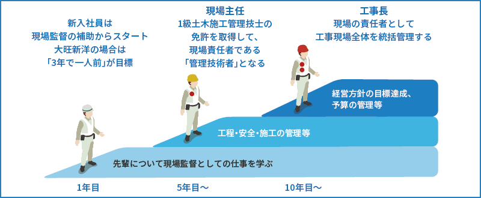

港湾土木事業の特徴
港湾土木事業では、船が停泊し人や荷物を積み下ろしする泊地、波から港を守る岸壁や防波堤などの構造物を作ります。海上は天候に左右されやすく、波風に負けない巨大な構造物を建設する港湾土木の現場には、高い技術力が必要です。
岸壁は、ケーソンと呼ばれるコンクリート製の大型の箱を海中に沈めて造ります。
高さが約10mのケーソンを据え付けた岸壁。ケーソンとしては小さめですが、それでも700tもあります。
巨大なケーソンを海中に設置するのに、許される誤差はわすか数センチ。技術力、想像力、経験が問われる現場です。
風や雨、波などの状況が常に変化し、多数の機材を同時に運用する海上での作業には、チームワークが不可欠です。
ケーソンを作る海上ドッグです。ケーソンは巨大なので、海上で作って船で運びます。
ケーソン制作の様子です。木枠で囲いながらコンクリートを流し込み、下から順番に造ります。
やり直しがきかない上に緻密な調整が必要な作業が続くので緊張します。ケーソン作りから運搬、設置まで、どの工程にも熟練の技術が光っていますよ。スケールが大きく怖い部分もありますが、作ったものが港や人々を守ると思うと誇らしい仕事です。
防波堤工事の仕事
港湾土木は大きく分けて、ケーソン製作現場と施工現場があります。工事の基礎となるケーソンは品質が命。施工時には潜水士との連携して、海上からは見えない海底にケーソンを正確に据え付けます。クレーン操作、操船なども自分たちで行います。
ケーソンとは、防波堤や岸壁のもとになる、鉄筋コンクリートでできた巨大な箱です。あらかじめ製作しておいて、土台ができたら据え付けます。
基盤にコンクリートを流し込む速度や深さがうまくいかないとひび割れや気泡ができ、耐久性が下がってしまいます。美しさは品質の高さを表します。
完成したケーソンは中が空洞になっていて、現場まで船で曳いていきます。コンクリート製の巨大なケーソンも、浮かせれば運搬可能です。
基礎の石を均してもらったり、設置後に間隔を測ってもらったり。設置業務は潜水士さんとの連携プレーが必須です。
同じ高さに揃えられた基礎のブロック、まっすぐに揃ったケーソン…海中で直線を保つのはとても難しい作業です。
港湾工事は、海上に見えるのは施工部分のほんの一部。外から見えにくい仕事だけれど、港や人々を守っています。
港湾土木の現場
港湾土木の現場は、〇〇、大旺新洋でプロジェクトを進めていきます。プロジェクトによって規模、期間ともに様々ですが、00人ほどの作業員が、ケーソン作りは2ヶ月ほど、ケーソンを用いた工事は半年ほどの期間をかけて進めていく現場が多いです。

現場監督は一緒に作業する職人さんとのコミュニケーションも大切。互いに気持ちよく仕事ができるよう工夫します。台風などの災害があると、スケジュール管理がとても大変です。